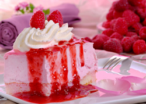
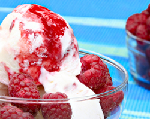

Tributes: Native Cooking
Janet Walters
My favorite past time is cooking. I especially like cooking for family and friends. I was glad to find this web site about Native Cooking of Utah. I like to make sure the items I choose to cook meet the needs of my target audience. I have found the recipes in this collection to be wildly popular with my Utah neighbors and family members. My family especially loves the raspberry cake recipe. I am enclosing a photo of my version of the cake.Thanks for adding spice to my cooking, Janet Waters Salt Lake City, Utah
Daisy Daniels
My name is Daisy Daniels and I have enjoyed using the recipes I have found at your web site. I thought I already knew how to cook like a Utahan, but I have been able to expand my repertoire after trying out some of your more unusual offerings. I like how these recipes are inexpensive to prepare, and they serve lots of people. The clean up usually is painless as well. I loved your green jello recipe. My family makes sure we never have leftovers when I fix this one.Thanks for everything, Daisy Daniels Eureka, Utah

Bernice Cooks
Whenever I am at a loss about what to cook for dinner, I just go to your web site and I can always find an answer. The ingredients of your recipes are always reasonably priced so I won't have to worry about busting my budget. I was nervous about trying to make my own ice cream, but your Bear Lake Raspberry recipe made me brave enough to try it. The step by step directions were easy to follow and my kids really loved the ice cream. I am attaching a photo.I scream for your ice cream, Bernice Cooks Orem, Utah
Daniel Johnson
Real men are not afraid to try Dutch oven cooking. I made an investment in equipment, but it sat in my garage until I found your wonderful recipes online. Now, I am a hit at family reunions and campouts. I have tried main dishes, deserts, and even baked rolls. My next attempt will be lasagna. Thanks for giving me the courage to try cooking the old fashioned way. Warmly yours,
Daniel Johnson St. George, Utah